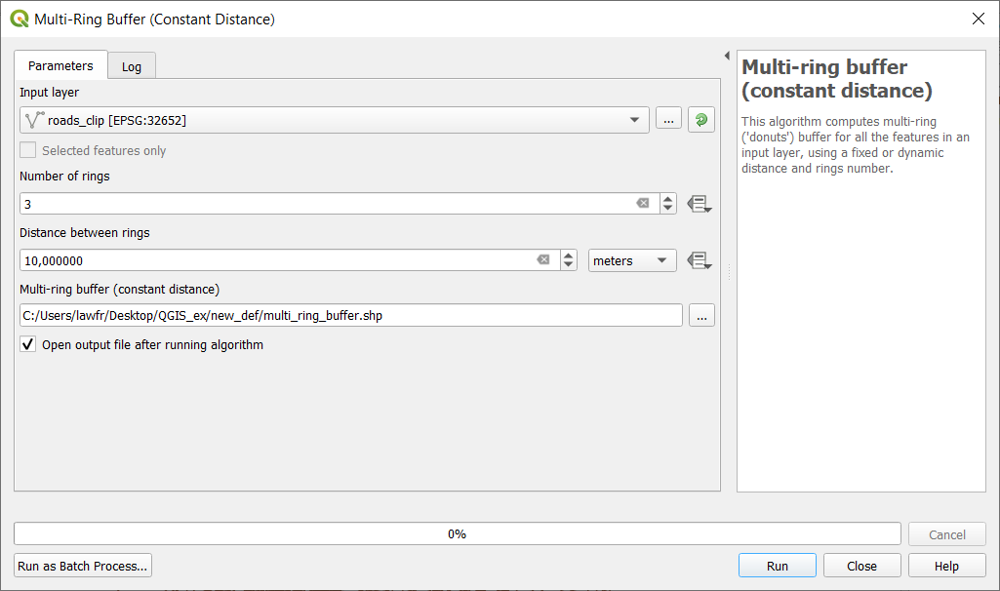
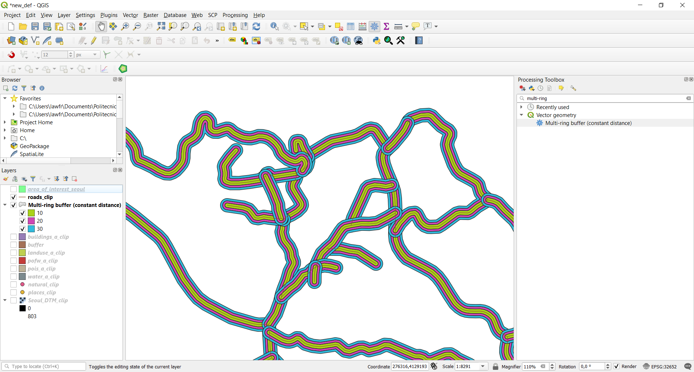

3.1. Buffer operations¶
We will now focus on the analysis and manipulation of line shapefiles. To do so, let’s consider only the roads_clip shapefile.
You can turn-off all the other layers in the Layers panel to have a more compact visualization of the data.

3.1.1. Single buffer¶
A very common operation with line shapefiles is the buffer, which allows to create an area within a specified distance from features. Note that in QGIS a buffer can be done also around point or polygon shapefiles. To create a buffer, click on Vector->Geoprocessing Tools->Buffer and specify the input parameters as follows:
- Input layer: the
roads_cliplayer- Distance: the desired distance (in our case 10m). Note that you can also specify the unit of measure
- Segments: the number of line segments to be used to approximate a quarter circle when creating rounded offsets (in our case 5)
- Buffered: the path and the name of the output vector layer. Note that if left empty a temporary layer will be created

This will create a buffer area around our roads layer; if you zoom on your map, the result should look the following.

3.1.2. Multi-ring buffer¶
You can also create multiple buffers around the same features, within a specified distance.
To select the above function, we introduce here a very powerful instrument in QGIS: the Processing Toolbox. To add it to your window, go to View->Panels and tick “Processing Toolbox panel”. It should appear on the right side of your screen; this panel contains all the functions of QGIS, and in particular, the search bar is very useful to find the function you need.

In this case, you can search for “Multi-ring” and select the function Multi-ring buffer (constant distance). The input parameters are:

- Input layer: the
roads_cliplayer- Number of rings: in our case 3
- Distance between rings: in our case 10m
- Multi-ring buffer (constant distance): the path and the name of the output vector layer. Note that if left empty a temporary layer will be created
This will create three buffer areas around our roads layer; if you zoom on your map, and if properly styled, the result should look like this:

{kind=link}
{kind=link}